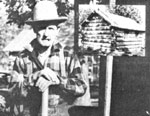
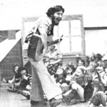
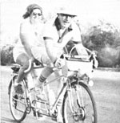

Happy Jack Preston is a wiry, tough, and wellpreserved octogenarian who has lived the life of a pioneer since he first settled in northern Minnesota back in 1906. As a young man, Happy lumberjacked ... hauling heavy loads of logs along a 20-mile trail by horse and wagon. And, since then, Jack has built some 30 log structures by hand.
The woodsman and his wife raised nine children in their old, self-made cabin ... until the building rotted away to the point where they had to stoop over to look out the windows. Then, at the age of 78, Jack constructed the sturdy poplar structure -still warmed by We heat of a woodburning stove and lighted by the glow of a kerosene lamp-in which he lives today.
During the cold season, Happy keeps busy working in the woods and tanning hides. Butwhen summer rolls aroundhis chores are interrupted by a deluge of grandchildren: They love to ride in Grandpa's ancient hay wagon, down his peaceful tree-lined lane ... far from the hurried outside world, but not too far from the cabin that Jack built! - Thelma Anderson,
After 18 years as a marketing executive for the IBM Corporation, John Bel Inc. felt it was time for a change ... so he quit his prestigious position and set out to become a cheesemaker. Bellue bought a small farm in northern New Mexico and began searching the United States to locate recipes for the cheeses he remembered from his childhood in France. His efforts were in vain, however, and the former Frenchman was forced to journey back to his native land to ferret out the secrets of the art from the famous masters of Normandy and Brie.
"I learned," says Bellue," that cheese is a living thing with a shelf life of only a few weeks ... unless-as is often the case in the United States - the dairy product and its natural flavor are killed with preservatives." Those who've sampled John's gourmet products appear to agree with his theories ... for Belluc and one helper are currently supplying the Santa Fe and Albuquerque areas-each and every month-with some 1,500 packages of Natural Homemade cheese! _ Ruth Pritchard.
Marian Van Atta is helping to solve two of today's most pressing problemsrising food costs and the use of harmful pesticides-by spreading expert advice about both organic gardening and foraging for wild edible plants.
Marian has been sharing her knowledge of wild and cultivated foods through a handbook calIed Living off the Land (available from Marian Van Atta, P.O. Box 2131M, Melbourne, Florida 32901), a. weekly column published in three Florida newspapers, and a subtropic newsletter ($5.00 for six bi-monthly issues ... $1.00 each for back issues). The newsletter-which has since become Ms. Van Atta's pet project-contains information on the identification and culture of tropical and subtropical fruits and vegetablas ... often includes recipes ... and features a-Seed Exchange-through which participants can swap different varieties of 'plant starters"
"My philosophy," says Marian, "isquite simplythis: Plant seeds, bushes, and trees ... if we all live economically-and ecologically-now, our future harvests will help make this world healthier for generations to come!-Ruth Hormanski.
Armed only with a guitar and an offbeat brand of humor, Barry Louis Pollsar has been touring Maryland with his own refreshing repertoire of children's "folk music".
"Most of today's songs for youngsters tend to deny young folks' negative feelings," says the 24-year-old lyricistsatirist- comedian. "My tuneswhich include such true-to-life characters as pesky siblings, tormented babysitters, mean teachers, disobedient youngsters, and nagging parents-attempt to bring these concerns out into the open."
To date, Barry has recorded his songs on four fine children's albums (available through his own company: Rainbow Morning Music Alternatives, 2121 Fairland Road, Silver Spring, Maryland 20904). When folks order-by sending $5.00 per album-Polisar scrounges cardboard from local supermarkets, cuts the material to size, and mails off his recycled-children-pleasing-packages.
"I want to provide an alternative to today's highly commercialized records for children," says Barry. "And-like the character in one of my songs who walks upside down because he doesn't like the way the world is right side up-I'm simply trying to do something that will make a difference. " - B. L. Polisar.
Eugene and Sylvia Berlatsky are seasoned tandem travelers. The middleaged Phoenix, Arizona couple have journeyed some 35,000 miles-almost the equivalent of one and a half times around the world-all on a bicycle-built-for-two.
Though the Berlatskys took up cycling relatively late in life, the sport has kept them physically fit and looking younger Man their years. But tandem touring has become much more than just a pleasurable path to health for the two-wheeling
I'll, pair. Since the couple began cycling, for instance, Eugene has founded the Arizona Tandem Society ... become president of the Arizona Council of American Youth Hostels (for which the Berlatskys lead a breakfast ride every Sunday morning) ... and begun serving on city, county, and state committees to promote the building, maintenance, and restoration of Arizona's bikeways.
"It's important that we start to plan for the bicycle now," assert Sylvia and Eugene, "because if the price of gasoline continues to increase at its present rate, It's likely that we'll all be on two wheels someday! "-Rachelle Berlatsky.
|
PHOTOS SUPPLIED BY THE AUTHOR |
 PHOTO BY TOM MCGOVERN |
 PHOTO BY THAYER HOFF |
|
 |
|
|